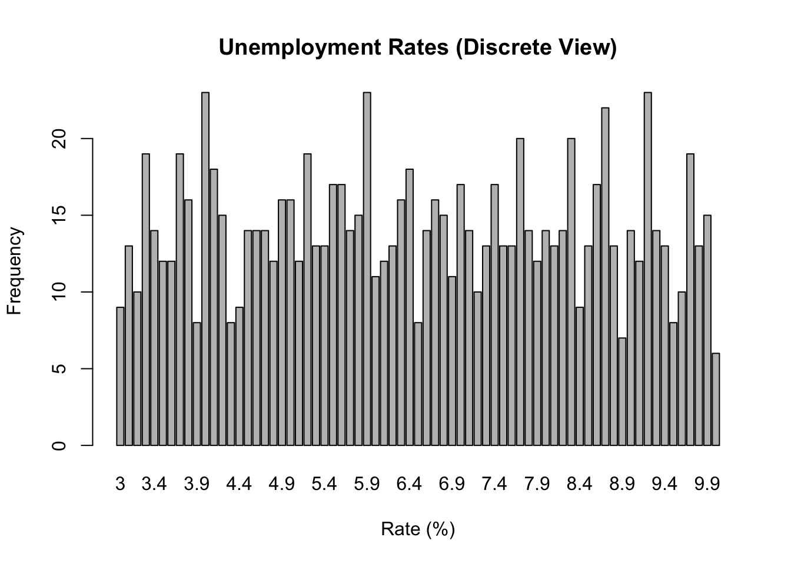

In social science research, understanding the nature of our data is crucial for selecting appropriate analysis methods and drawing valid conclusions. This chapter explores fundamental concepts of data types, starting from basic mathematical set theory and progressing to practical applications in social science research.
3.2 Foundations in Number Sets
Before diving into data types, it’s essential to understand the basic number sets that form the foundation of our understanding of data.
3.2.1 Basic Number Sets
Natural Numbers (ℕ): The counting numbers {1, 2, 3, …}
Integers (ℤ): Includes natural numbers, their negatives, and zero {…, -2, -1, 0, 1, 2, …}
Rational Numbers (ℚ): Numbers that can be expressed as a fraction of two integers
Real Numbers (ℝ): All numbers on the number line, including rationals and irrationals
3.2.2 Properties of Sets
Countable Sets: Sets whose elements can be put in a one-to-one correspondence with the natural numbers. For example, the set of integers is countable.
Uncountable Sets: Sets that are not countable. The set of real numbers is uncountable.
Discrete Sets: Sets where each element is separated from other elements by a finite gap. The integers form a discrete set.
Dense Sets: Sets where between any two elements, there is always another element of the set. The rational numbers and real numbers are dense sets.
Note
Understanding these set properties is crucial for grasping the nature of different data types in social sciences.
3.3 Discrete vs. Continuous Data
Now that we have a foundation in number sets, we can better understand the distinction between discrete and continuous data in social science research.
3.3.1 Discrete Data
Discrete data corresponds to discrete sets in mathematics. It can only take on specific, separate values, often from a countable set.
Voting choices in an election (e.g., 1 = Party A, 2 = Party B, 3 = Party C)
3.3.2 Continuous Data
Continuous data corresponds to dense sets in mathematics, typically represented by real numbers. It can take any value within a range.
Properties of continuous data:
Values can be any real number within a range
Represented by real numbers (ℝ)
Typically measured rather than counted
Always infinite (in theory, though limited by measurement precision in practice)
Examples of continuous data in social sciences:
Age (can be any real number ≥ 0)
Income (can be any non-negative real number)
Time spent on a task (can be any non-negative real number)
3.3.3 Visualization of Discrete vs. Continuous Data
Let’s visualize the difference using R:
Click to show/hide R code
library(ggplot2)library(patchwork)# Generate sample dataset.seed(123)discrete_data <-sample(1:5, 1000, replace =TRUE)continuous_data <-rnorm(1000, mean =3, sd =1)# Create data framesdiscrete_df <-data.frame(value = discrete_data, type ="Discrete")continuous_df <-data.frame(value = continuous_data, type ="Continuous")# Discrete plotp1 <-ggplot(discrete_df, aes(x = value)) +geom_bar() +scale_x_continuous(breaks =1:5) +labs(title ="Discrete Data", x ="Value", y ="Count") +theme_minimal()# Continuous plotp2 <-ggplot(continuous_df, aes(x = value)) +geom_histogram(bins =30, fill ="skyblue", color ="black") +labs(title ="Continuous Data", x ="Value", y ="Count") +theme_minimal()# Display plots side by sidep1 + p2
3.3.4 The Continuum Between Discrete and Continuous
In practice, the distinction between discrete and continuous data can sometimes blur:
Discretized Continuous Data: Continuous variables that are rounded or grouped into categories (e.g., age groups, income brackets).
High-Cardinality Discrete Data: Discrete variables with many possible values can approximate continuous data (e.g., ZIP codes, detailed occupation codes).
Limited Precision Measurements: Continuous variables measured with limited precision appear discrete (e.g., temperature measured to the nearest degree).
Important
The choice to treat data as discrete or continuous often depends on the research context, measurement precision, and analytical goals.
3.4 Implications for Social Science Research
Understanding the nature of data as discrete or continuous, and their relationship to mathematical sets, has important implications for social science research:
Measurement and Operationalization: How we define and measure variables can influence whether they are treated as discrete or continuous.
Statistical Analysis: Different statistical techniques are appropriate for discrete vs. continuous data. For example:
Discrete: Chi-square tests, logistic regression
Continuous: t-tests, linear regression
Data Visualization: The choice of visualization technique depends on whether data is discrete or continuous (e.g., bar plots vs. histograms).
Interpretation of Results: Understanding the discrete or continuous nature of data is crucial for correctly interpreting research findings and their implications.
3.5 Practical Exercise
Let’s create a dataset that includes both discrete and continuous variables, and explore how their properties influence our analysis:
Click to show/hide R code
library(tidyverse)
── Attaching core tidyverse packages ──────────────────────── tidyverse 2.0.0 ──
✔ dplyr 1.1.4 ✔ readr 2.1.5
✔ forcats 1.0.0 ✔ stringr 1.5.1
✔ lubridate 1.9.3 ✔ tibble 3.2.1
✔ purrr 1.0.2 ✔ tidyr 1.3.1
── Conflicts ────────────────────────────────────────── tidyverse_conflicts() ──
✖ dplyr::filter() masks stats::filter()
✖ dplyr::lag() masks stats::lag()
ℹ Use the conflicted package (<http://conflicted.r-lib.org/>) to force all conflicts to become errors
id age income education_years
Min. : 1.00 Min. :18.10 Min. : 11039 Min. :10.00
1st Qu.: 50.75 1st Qu.:32.67 1st Qu.: 24964 1st Qu.:13.00
Median :100.50 Median :43.75 Median : 36294 Median :17.00
Mean :100.50 Mean :43.52 Mean : 40536 Mean :16.02
3rd Qu.:150.25 3rd Qu.:55.42 3rd Qu.: 53754 3rd Qu.:19.00
Max. :200.00 Max. :64.70 Max. :140046 Max. :22.00
job_satisfaction
Min. :1.000
1st Qu.:2.000
Median :3.000
Mean :3.305
3rd Qu.:4.000
Max. :5.000
Click to show/hide R code
# Visualizationsp1 <-ggplot(data, aes(x = age)) +geom_histogram(bins =20, fill ="skyblue", color ="black") +labs(title ="Age Distribution (Continuous)", x ="Age", y ="Count")p2 <-ggplot(data, aes(x = education_years)) +geom_bar(fill ="lightgreen", color ="black") +labs(title ="Education Years (Discrete)", x ="Years of Education", y ="Count")p3 <-ggplot(data, aes(x = income)) +geom_histogram(bins =30, fill ="pink", color ="black") +labs(title ="Income Distribution (Continuous)", x ="Income", y ="Count")p4 <-ggplot(data, aes(x =factor(job_satisfaction))) +geom_bar(fill ="lightyellow", color ="black") +labs(title ="Job Satisfaction (Discrete)", x ="Satisfaction Level", y ="Count")# Arrange plots(p1 + p2) / (p3 + p4)

Click to show/hide R code
# Correlation analysis (appropriate for continuous variables)cor(data$age, data$income)
[1] 0.03168301
Click to show/hide R code
# Chi-square test (appropriate for discrete variables)chisq.test(table(data$education_years, data$job_satisfaction))
Warning in chisq.test(table(data$education_years, data$job_satisfaction)):
Chi-squared approximation may be incorrect
Understanding the fundamental properties of number sets and how they relate to discrete and continuous data is crucial in social science research. This knowledge informs our choices in measurement, analysis, and interpretation of data. As we’ve seen, while the mathematical distinction between discrete and continuous is clear, real-world data often exists on a continuum between these two types. Researchers must carefully consider the nature of their data when designing studies, choosing analytical methods, and drawing conclusions.
3.7 References
Gentle, J. E. (2009). Computational statistics (Vol. 308). New York: Springer.
Stevens, S. S. (1946). On the theory of scales of measurement. Science, 103(2684), 677-680.
Agresti, A. (2018). Statistical methods for the social sciences. Pearson.